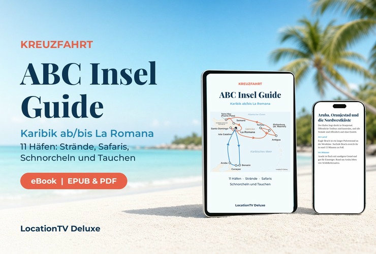

Wir sind Nadine und Sebastian von LocationTV Deluxe. Unser E-Book hilft euch, auf der Kreuzfahrt ab La Romana an jedem Halt das zu wählen, was sich wirklich lohnt – an Land und im Wasser.
Start und Ziel – und der Weg zu Künstlerdorf, Höhle und den Tauchplätzen vor Bayahíbe.
Unbewohnte Schutzinsel: der stärkste Wassertag vor der dominikanischen Küste.
UNESCO-Kolonialstadt – wenn ihr das richtige Terminal trefft.
Ein Naturhalt, der sich nur in einer bestimmten Jahreszeit ganz öffnet.
Road Town zu Fuß, das bekannteste Wrack der Inseln nur per Boot.
Nelson’s Dockyard lohnt sich, liegt aber nicht neben dem Schiff.
Stadtbummel vom Kai, Schnorcheln an der Nordwestküste, ein berühmtes Wrack auf dem Wasser.
Bunte Willemstad zu Fuß – und flache Uferriffe in kurzer Reichweite.
Das klarste Riff der Route, mit Regeln, die ihr vorher kennen solltet.
Für alle, die mitfahren: ob ihr lieber in der Stadt bleibt, am Strand liegt oder schnorcheln und tauchen wollt. Zu jedem Halt steht, was dazu passt – und wofür ihr besser einen Ausflug plant.
Eine Rundreise ab und bis La Romana: Aruba, Bonaire und Curaçao, dazu Isla Catalina, Santo Domingo, Samaná, Tortola und Antigua. Im Guide erfahrt ihr zu jedem Stopp, was an Land und im Wasser lohnt.